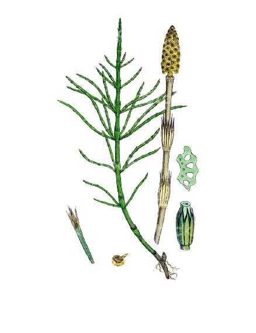
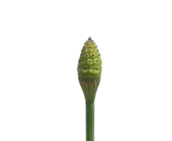
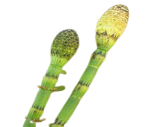
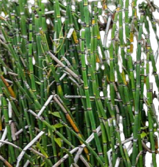
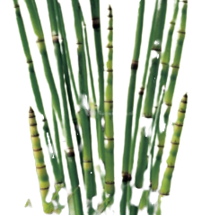
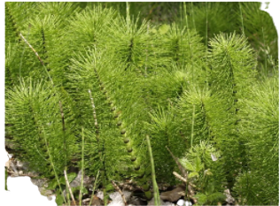

La cola de caballo es una de las plantas más antiguas de la Tierra, hace más de 400 millones de años, en la era paleozoica, formaba bosques enteros. Su aspecto es el reflejo de un tiempo lejano cuando la formación de las flores todavía no era posible y tenían una relación arcaica con el mundo mineral, el agua y la luz.
El género Equisetum es una planta que no posee semilla, sin embargo, tienen un valor cultural muy importante y son ampliamente utilizadas por las comunidades debido a sus usos potenciales y propiedades bioquímicas.
Presenta tallo no ramificado, bienal, de 3-8 mm de diámetro, y que alcanza de 2 a 9 dm de alto, con un número de costillas que oscila entre 14 y 26. Cada una de estas costillas lleva dos filas de tubérculos de sílice netamente separados. Las vainas están aplicadas al tallo, con los dientes articulados y caedizos, en los que se ve claramente dos bandas de color oscuro (de marrón a negro) separadas por otra clara. Conos hasta 13 mm de largo por 7 mm más o menos de ancho, con un mucrón apical.
Al germinar las esporas se forma el gametofito, que sólo tendrá anteridios o arquegonios, siendo entonces dimórficos, aunque en algunas especies se producen anteridios en los gametofitos femeninos pero tras madurar los arquegonios, lo que se conoce como proteroginia. Los espermatozoides se producen en gran número y son flagelados. Al final de las ramas fértiles se encuentra el estróbilo, formado por los verticilos de hojas fértiles (que en este clado se llaman "esporangióforos").
Equisetum: El nombre del género, «Equisetum», proviene del latín: «equus» caballo y «seta» crin.
Los equisetos son plantas perennes y vivaces que prefiere suelos húmedos y arcillo-silícicos, incluso marismas o ciénagas. Especialmente se ubican sobre suelos húmedos y cenagosos, en terraplenes junto a senderos o caminos o sobre terrenos sin cultivar y praderas.
Este grupo de plantas primitivas se encuentran distribuidos a lo largo de las regiones templadas del hemisferio septentrional. En la actualidad se distinguen dos quimiotipos en base a la presencia de flavonoides particulares, uno en Europa y el otro entre Asia y Norteamérica.
En la península ibérica se localiza en los ambientes húmedos de las provincias del norte Asturias, Aragón, Cantabria, Cataluña, Galicia y Navarra. Los mayores productores e importadores de estas especies se localizan en Albania, Bosnia-Herzegovina, Croacia, Eslovenia, Hungría, Polonia, Serbia y Rusia.
Equisetum ramosissimum: Planta rizomatosa, de hasta 1 m de altura, con tallos herbáceos, ramificados y articulados, de 0,5-1 cm de grosor, estriados, con surcos longitudinales. Vainas de los nudos más largas que anchas, rematadas en un conjunto de piezas triangulares, a modo de dientes, con frecuencia de coloración más oscura, pardas o casi negras.
Equisetum fluviatile: Es una planta conocida como equiseto mayor o equiseto de los ríos. Es originaria del hemisferio norte, incluyendo el norte de Italia, el centro de España, Corea, China, Japón y algunos puntos de Norteamérica. Desarrolla tallos de entre los 30 centímetros hasta el metro de altura.
El Equisetum hyemale, o equiseto de invierno, es una planta que crece en América del Norte, Centroamérica, en Europa y en Asia. Sus tallos alcanzan alturas de hasta 90 centímetros, y son delgados.Se usa mucho como medicinal, para tratar enfermedades renales y urinarias, así como del aparato digestivo.
El Equisetum japonicum es una cola de caballo común en prácticamente toda la península ibérica, aunque se encuentra en las regiones templadas y tropicales de todo el mundo. Desarrolla tallos de hasta 1 metro de altura.
El Equisetum telmateia es una planta originaria de Europa, oeste de Asia, noroeste de África, y oeste de América del Norte. Puede alcanzar una altura variable, de 30 a 240 centímetros, con tallos de hasta 2 centímetros de ancho.
